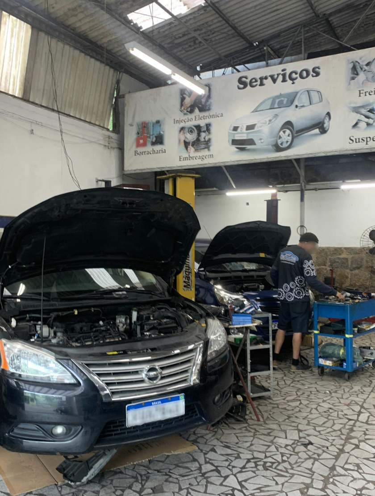
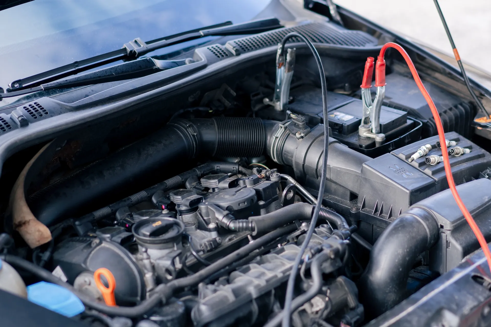
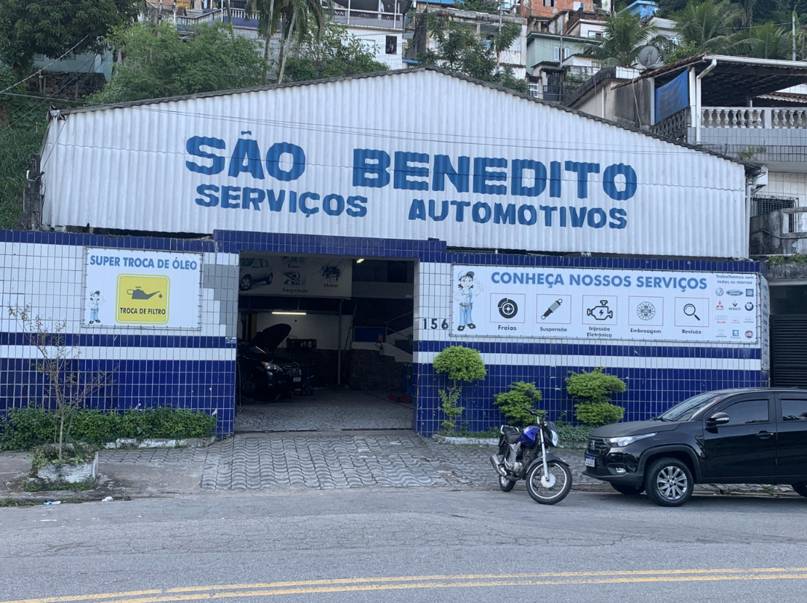

Revisão Preventiva
Avaliação de freios, óleo, filtros, suspensão e itens essenciais para evitar problemas futuros.
Manutenção automotiva com diagnóstico cuidadoso, atendimento transparente e serviço feito para o seu carro voltar seguro para a rua.
Atendimento
Segunda a sexta 08:00 às 18:00Rua Nove de Julho, 156
Marapé, Santos - SP
Escolha um serviço para ver os detalhes do atendimento.
Avaliação de freios, óleo, filtros, suspensão e itens essenciais para evitar problemas futuros.

Diagnóstico de ruídos, vazamentos e desempenho para recuperar força, economia e durabilidade.

Substituição de óleo e filtros conforme a recomendação do fabricante e o uso do veículo.

Inspeção e reparo de amortecedores, molas, pivôs, buchas e bandejas para mais estabilidade.

Correção de falhas em componentes vitais com orçamento transparente e testes finais.

Diagnóstico de bateria, alternador, partida, luzes e sistema elétrico do veículo.

A Mecânica São Benedito atende motoristas de Santos com serviços de manutenção preventiva e corretiva para veículos nacionais e importados.
O trabalho combina experiência prática, equipamentos adequados e comunicação direta com o cliente, para que cada reparo seja feito com clareza e responsabilidade.
À frente da Mecânica São Benedito está uma profissional dedicada, responsável e comprometida com a qualidade dos serviços prestados.
A atenção aos detalhes, o cuidado com cada cliente e a busca por um atendimento transparente fazem parte da identidade da oficina.
Falar com a oficinaAtendimento em Santos com localização fácil no Marapé.
Endereço
Rua Nove de Julho, 156
Marapé, Santos - SP
CEP: 11070-150
Telefone / WhatsApp
(13) 97406-6476Horário de funcionamento
Segunda a sexta: 08:00 - 18:00
Sábado e domingo: fechado